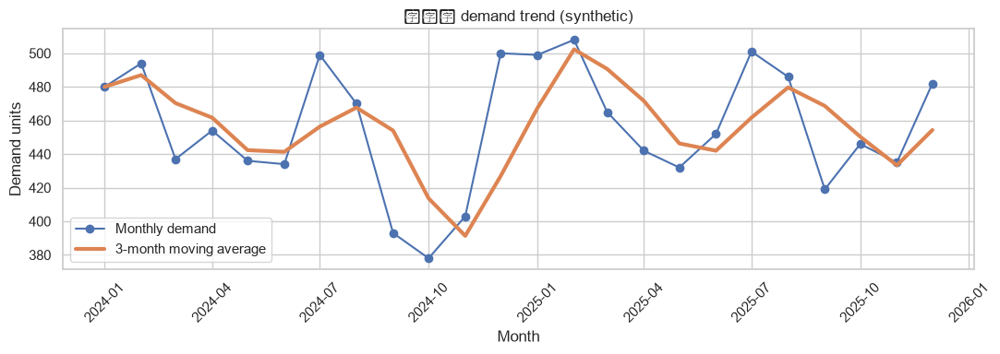

Student step
載入資料並確認分析任務
- 本步目標
成功載入 Day 1 CSV，確認資料尺寸、欄位、分析粒度與虛擬資料邊界。
- 操作路徑
Day 1 Notebook → 1. 載入資料與套件
- 操作動作
從課程網站按下「Open in Colab」，登入 Google 帳號後選擇「檔案 → 在雲端硬碟中儲存副本」。
從網站下載 day1_market_demand_signals.csv，再按 Colab 左側資料夾圖示，把 CSV 上傳到 /content。
確認 DATA_FILENAME 保持為 day1_market_demand_signals.csv，不要改成自己的中文檔名。
按儲存格左側播放鍵執行，第一次建立 Matplotlib 字型快取時耐心等待，不要重複按鍵。
在輸出區核對資料路徑、資料尺寸與前三列，並找到 is_synthetic 欄位。
在學習單寫下資料粒度：一列是一家公司的一個 offer 在一個月份的觀察。
- 參數設定
本段不修改分析參數；只確認 DATA_FILENAME 與上傳檔名一致。
- 執行方式
執行本段唯一程式碼儲存格；看到資料預覽後才進入下一段。
- 預期輸出
預設資料尺寸應為 (384, 12)，前三列屬於雜草町手捏陶體驗；is_synthetic 顯示 True。路徑在 Colab 通常是 /content/day1_market_demand_signals.csv。
- 結果解讀
384 列來自 4 家公司 × 每家 4 個商品或服務 × 24 個月份。這個乘法若對不起來，代表資料可能少列、重複或使用錯檔。此處只能說資料為教學模擬，不能說任何一家企業真的有這些需求。
- 常見錯誤與修復
- 錯誤現象
FileNotFoundError：找不到 day1_market_demand_signals.csv
- 可能原因
CSV 尚未上傳，或瀏覽器替重複下載檔加上 (1)。
- 修正方式
刪除錯名檔，重新上傳並確認左側檔名完全一致，再重跑本格。
- 錯誤現象
資料尺寸不是 (384, 12)
- 可能原因
上傳了其他天資料、Excel 檔或曾手動修改 CSV。
- 修正方式
回網站重新下載 Day 1 原始 CSV，重啟執行階段後由第一格重跑。
- 完成檢核
我能指出資料尺寸、虛擬標記與一列資料代表的商業單位。
